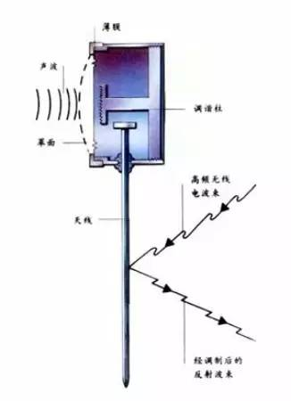

影响历史的四个黑客故事

诸多黑客对黑客精神下过定义，总结起来大概是：
采用一切可能的手段达到目的。
有趣的事，这个定义里没有提到互联网。根据这个说法，黑客就远远不用囿于网络世界，甚至这个职业应该和刺客一样古老。果真如此的话，历史上最浓墨重彩的黑客，恐怕要在战争史中去寻找了。
曾经创办安全公司瀚海源的方兴如今已经加入阿里，热衷于钻研威胁情报的他也是个军迷。战争是人类冲突的最高形式，在战争中攻守双方会把各自的大脑燃烧到极限，所采取的攻守策略往往匪夷所思。方兴觉得目前在网络空间里攻防的态势，激烈的程度已经堪比世界大战。根据他的理论，可以进行一个有趣的类比：
1、在战争中，双方会从技术的对抗，上升到战略的对抗，进而上升到核心人物之间的智力博弈。
2、在高级的互联网攻防中，也会从木马和杀毒软件的工具对抗，到漏洞利用和防护之间的系统对抗，而最终进化为黑客和安全人员之间“人与人”的智力博弈。
在最牛X的网络对抗中，自动化的工具总是力不从心。最解恨的办法就是：揭露出武器背后敌人的真容，了解敌人的目的，进而制定针对性的对抗策略。而这正是威胁情报的意义所在。不久前，方兴在一次演讲中分享了历史中著名的谍战案例。在他眼中，这些史实给了互联网时代的“白帽子”很多灵感。
一、金唇窃听器/科技不是解药，而是毒药
“一切窃听器都需要电源。”这个论断是正确的，在1945年之前。
美苏建交以来，美国驻苏联大使馆饱受窃听器骚扰，无论搬迁到哪里，探测设备总能在室内监测到来自窃听器的微弱电信号。最后，愤怒的美国人甚至把已有的建筑拆除，从墙里挖出很多连着电线的窃听器。为了保险起见，新大使馆的一砖一瓦都是在美国人的监督下垒起来的。在这种情况下， 如何听见美国人说什么，成为了苏联“黑客”们需要研究的首要课题。

含有金唇窃听器的美国国徽
1945年，克格勃安排一群小萝莉和小正太（少先队员）把一个珍贵的礼物送给了美国大使卡里曼。那是一个雕刻精美的木制美国国徽。美国人用最先进的科技对这个礼物进行了扫描，没有发现任何供电设备，于是放心地把它悬挂在了大使办公室的背墙中央。
殊不知在木雕里面，苏联人放置了一个精巧的装置：金唇。这是一个鼓膜连接的钢针，交谈的声音会通过薄膜转化成钢针的震动，而克格勃在对面的楼里用高强度的雷达照射这枚钢针，就可以通过微小的震动信息还原屋内的声波。

金唇窃听器原理
这个不用电源的纯机械窃听器妥妥地工作了八年，这期间美国大使因为常年被雷达照射，身体异常衰弱，导致八年间更换了四任大使。直到某个叛逃的克格勃向美国坦白从宽，这个惊天秘密才大白天下。
虽说这样精巧的窃听神奇已成过往。不过这件事却让相信科技可以解决一切的美国人啪啪打脸。某种程度上来讲，科技最为无情：如果敌人夺下了这把利剑，那么科技就不再是解药，而是毒药。
正如斯诺登披露的棱镜计划中显示，美国依靠技术优势，在中国的骨干网络甚至海底光缆中安插监控设备，理论上可以截获中国境内所有的信息，安全公司知道创宇CEO赵伟把这种开挂的玩法称为：上帝模式的威胁。
而技术进步带来的威胁不胜枚举。方兴表示，听说最近黑客们在研究一种黑科技，可以通过入侵手环，根据你的手部动作破解出你在键盘上输入了什么内容。这些攻击手段花样翻新，防不胜防，每次都会超越人们的认知范围。千言万语汇成一句话：科技发展让这个世界更安全？图样图森破！
二、偷袭珍珠港/掌握核心情报可以反转剧情
有关日本偷袭珍珠港，流传着一段传说。在偷袭的前一天，美国截获了两份电报。这两份电报是从日本本土发往驻美大使馆的。由于美国掌握了部分电文的密码，所以很快就破译出两份电报的内容：
1、华盛顿时间下午一点终止日美谈判。
2、大使馆尽快销毁密码本等涉密的资料。
按照军事常识来推断，这是日本将要宣战的标志。从日美两军当时的军力分布来看，最有可能被进攻的目标就是珍珠港，而根据终止谈判的时间推断，进攻将在华盛顿时间下午一点，也就是珍珠港当地时间凌晨七点发起。
确定这些信息之后，罗斯福马上命令将情报发给珍珠港驻守司令。但是阴差阳错，这份密文未能通过军用线路传输，而是改走了商业电报。悲催的是，迟到的电报抵达时，军港内已经无人接收这个消息了。
如果暂且把不给力的结果放在一边，这个故事展现了一次标准的情报生成流程。其中一个真理不言而喻：如果知道了对方的进攻动向，那么防御难度就会大幅降低。
然而，在实际的网络攻防中，防御者很难把握对手的动向。重要的原因在于：大多数人根本摸不清对手是谁。搞不清对手是谁，并不表明对手很涣散。对一些资产非常有价值的公司来说，对手往往是目标非常明确的组织。
方兴分享了他在阿里巴巴做防御的感受：
进攻阿里巴巴的黑客们并不会过多使用通用扫描器，进行漫无目的的扫荡。他们往往对阿里的业务架构非常熟悉，这种熟悉程度甚至超过我们的员工。有些过时的业务，自己的员工都记不清楚，但是却被当作黑客攻击的突破口。
研究这些和阿里巴巴“过不去”的黑客可以得出一个结论，有逼格的黑客已经过了有枣没枣打三杆子的时节，而是对明确的目标死咬不放，进行不达目的不罢休的精准攻击。如果想要认真地进行网络防御，可行的做法是先花些力气，搞清楚你的对手究竟是谁，然后再有针对性地追踪对手的情报。

三、诺曼底登陆/最牛的防御是把错误的信息种在敌人心里
把预定的观念输入别人的意识里，并且让别人误以为这是通过他自己的理性判断做出的高明决策，这件事的难度之高可以参考《盗梦空间》。但历史证明：无论在真实战场还是网络空间，对抗进行到白热化之后，双方都会被逼选择这个策略。
二战后期，盟军着手制定登陆欧洲的计划。加莱和诺曼底是登陆地点的两个选项。但是从实际情况来说，最终决定在哪里登陆，取决于哪一个地点德军的守备更加空虚。在决定了将诺曼底作为登陆地点之后，盟军司令部最重要的工作就是让希特勒相信他们会在加莱登陆。
所以一个情报欺骗计划应运而生。盟军派出了几十位忠心耿耿的间谍，让他们执行非常冒险的任务。结果可以预料，大多间谍都被捕。但是，间谍们执行的所有任务，都是为加莱登陆扫除障碍；他们本人也被司令部明确告知：盟军将会在加莱登陆。在德军的逼供之下，有些特工透露了“加莱登陆”的计划。这让德国对自己的判断深信不疑。直到盟军已经在诺曼底登陆，并且巩固了滩头阵地，德军还在幻想这只是盟军的虚晃一枪， 真正的主力将会进攻加莱。
满脸真诚的人最容易取得他人的信任，在网络攻防中，究极奥义同样在于以真诚的姿态释放错误的信息。近些年在安全团队中非常流行的一个手段就是投放蜜罐：
蜜罐是故意放出的目标。看起来正是黑客感兴趣的目标，而实际上会提供虚假的信息，引诱黑客前来攻击。所以攻击者入侵后，防御者就可以清晰地知道他是如何得逞的，也可以拿到黑客使用的工具，随时监测他们针对服务器发动的最新的攻击。还可以通过窃听黑客之间的联系，掌握他们的社交网络。
这其实是一个非常古老的战法：欲擒故纵。然而， 经过多年的攻防对抗，高级的黑客也会检测自己是否落入圈套。（譬如拿出一个陀螺看看它是不是会魔性地永转不停）他们放出的木马一旦检测到自己运行在封闭的沙箱之中，会倾向于表现出人畜无害的样子，让防御者相信这是一个迷途的羔羊而不是凶狠的木马。
从这个角度而言，网络安全攻防已经进入了尔虞我诈，丝毫没有套路可言的乱世。（人和人之间到底还有没有基本的信任啊喂。。。）
四、王进喜和不能说的秘密/从已有的信息中发现惊天秘密
来看看60年代的网红——铁人王进喜。纵然喜哥的神态坚毅而呆萌，但无论怎么看，这都是一张普通的照片。你一定不相信，有人因为使用了正确的“姿势”欣赏这张图片，赚到了一大笔钱。
再给你最后一分钟时间探索照片的奥秘，马上准备揭晓答案。
《中国画报》刊发的王进喜图片
这张图片刊登在了1964年的《中国画报》上，在王进喜身后就是刚刚建立的油井。日本对中国发现新油田的新闻非常关心，有意高价向中国出售全套的石油开采设备。但中国出于安全的考虑，在新闻报道中对油田的位置讳莫如深。有关油田的定位，就被日本政府交给了情报机关。情报人员做了如下判断：
根据王进喜穿的狗皮帽子和大棉袄，认为只有在北纬46度至48度的区域内，冬季才有可能穿这样的衣服。由此推断新油田位于齐齐哈尔与哈尔滨之间；
根据王进喜所握手柄的架式，推断出油井的直径；
根据王进喜所站的钻井与背后油田间的距离和井架密度，推断出油田的大致储量和产量。
提前掌握了这些信息，让日本有充足的时间为大庆油田量身定做开采方案，当中国政府公开征集开采大庆油田的设计方案时，日本人依靠精准的设计而一举中标。
值得庆幸的是，日本这种强大的情报分析能力没有用于军事用途。
这种敏锐的观察力，放到现在也是相当有前途的。就像前两年坊间流传的一份美国情报部门对中国“网军”的分析报告，其中正是通过某黑客使用的密码“2j3c1k”，判定这支黑客队伍隶属于总参某部“二局三处一科”。一个美国人对博大精深的汉语拼音有如此强大的领悟能力，真是分分钟要上天的节奏啊。
王珞丹在微博中晒出的两张图片
从已知信息中得出逆天结论的事情比比皆是，某清华男根据王珞丹微博中发布的两张窗外景色，通过楼下花坛的样式和观察对面楼的视角，成功定位了她的住址。在他确定王珞丹已经搬离这个公寓之后，才将复杂的推理过程公布在网上，并且得到了经纪人确认。
一个粉丝尚且能够调动如此强大的黑客能力，作为以金钱为目的的黑产从业者，能够得到的信息显然超出一般人的预期。在这样的格局下，如果黑客投入了全部的脑力，安全研究员也被迫把自己的智商毫无保留地“喷射”到对抗之中。例如：
反间计：利用不同“黑帽子”黑客团体之间的矛盾，策反其中一些人投靠安全人员，收缴木马工具。
声东击西：释放大量自相矛盾的混淆信息，掩盖黑客感兴趣的重要的信息。
祸水东引：释放出强大的反黑能力，让黑客知难而退，转而进攻其他目标。
四个前互联网时代的经典“黑客战例”讲完了。其实，每一段在现实世界发生过的历史都在网络世界重演，那些曾经改变历史的黑客们，如今在用另一种方法改变着现实。在如此严酷的环境中，立志做一个好黑客，恐怕案头的书要从《攻防技术宝典》变成《孙子兵法》了。